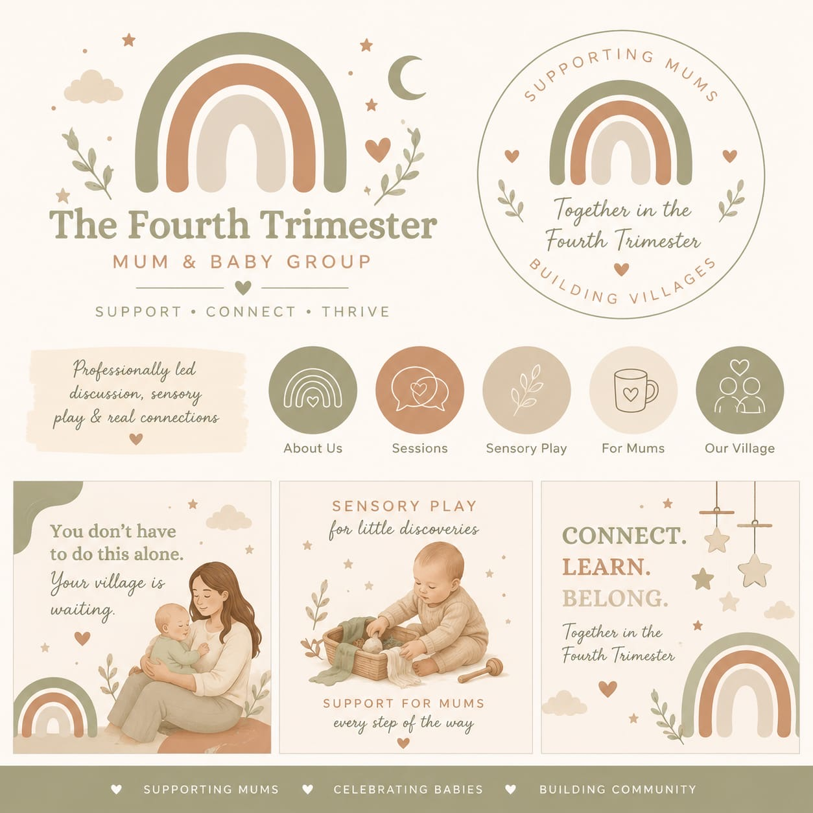

Sensory play
Gentle activities for little discoveries, early development, visual tracking, texture exploration, and bonding.
The sessions are designed as parts of one joined-up programme, so mums receive support for baby development, their own wellbeing, and community connection.
Gentle activities for little discoveries, early development, visual tracking, texture exploration, and bonding.
Trusted practitioners can lead focused conversations around recovery, sleep, movement, feeding, mental wellbeing, and infant development.
A warm group rhythm with time for coffee, questions, reassurance, and friendships that continue beyond the sessions.
Optional gentle movement and calming touch ideas to help babies settle while supporting connection and confidence.
Conversation prompts and group time that make it easier to meet other mums without awkwardness or pressure.
A final keepsake session with space to reflect, connect, and capture mum-and-baby memories.

Simple to join
The launch offer is deliberately simple: book onto the 10-session programme and receive the full mix of support, play, connection, and keepsake moments.
Book Your Place